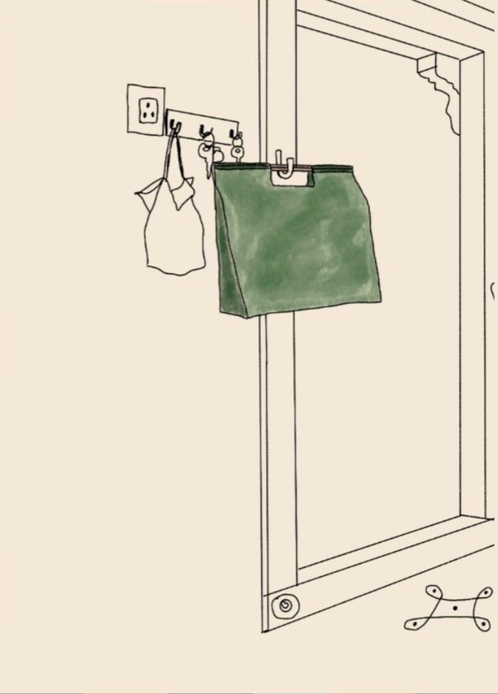
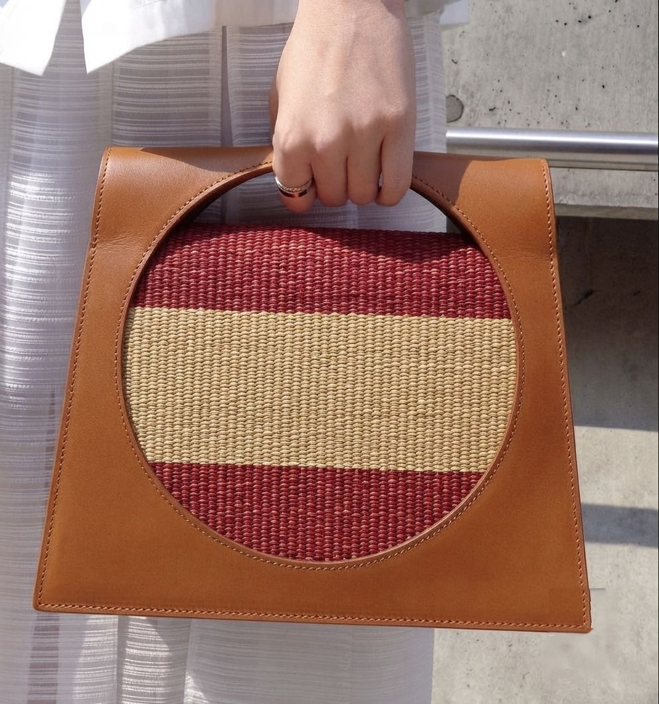
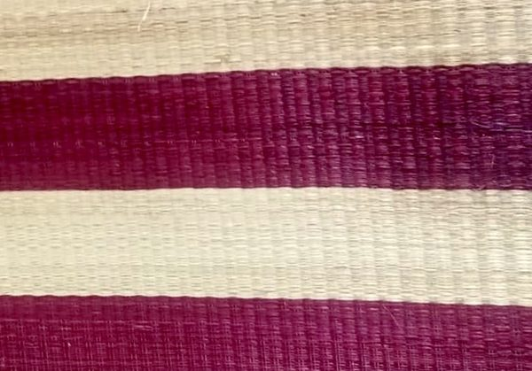

I Midday · Hand bag
Veyil
வெயில் · sunlight

Every household keeps a katta pai by the door, the one grabbed without thinking on the way out for a market run in the afternoon sun. Veyil carries that same instinct into a hand bag people would actually want seen: the same brightness, the same readiness, made to be carried in the open sun.
A circle cut clean through leather, the weave burning through the opening.
- Mood
- Bright, sure of itself
- Carry it
- On the market run, out in the sun
- Weave
- Wine and natural bands, tan leather


Veyil, circle-handle bag